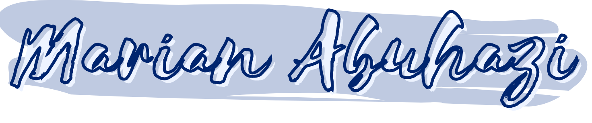
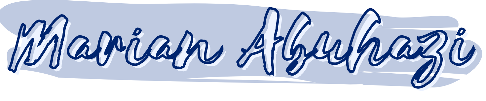

Hi! I'm Marian Abuhazi, aka Mabuhazi or "Rich Man"
Disclaimer: Absolutely no one calls me this except for myself and maybe one other person but I think it's kinda alpha and wish they did.
I have trouble sleeping at night partly because I can't stop (over)thinking, but mostly because I'm inventing, solving, or rehearsing what I deem will be the "NEXT BIG THING!" I consider myself resolute, empowering, imaginative and a witty Rich Man.
I was born and raised Marián Sinaí Abuhazi Zambrano in Caracas, Venezuela, but somehow I lost a couple of names and tildes after migrating to the US in 2010. I am now plain ole Marian Abuhazi, a first-year Computer Science student at Columbia University School of Engineering and Applied Science. Being the first in my family to attend college comes with a big weight and big dreams. Many dreams I am just starting to discover and others I am determined to achieve at the moment. I'm always down for a challenge and don't fear much except for school shootings, being tricked into Scientology, and drowning. I have a variety of interests in STEM, the arts, and areas I can't quite categorize. I have acted, swam, figure skated, played the viola for 7 years, coded, competed in history bowls, ran clubs, tutored and more. Talk about some range. New, challenging, fun? I'll do it.
Growing up in a low-income immigrant household, and raised by a single mother, my whole life has been about seizing every opportunity and tackling financial challenges. It has been about using one's priviledge and power to make a positive impact in other people's lives and that is something my family has been really successful at and it is a goal I set out to accomplish daily. I am a dreamer, a hard worker and a people's person. I thrive off of any activity that involves engagement, collaboration, and chatting. Love to talk, make people laugh and help others become the best version of themselves as I work on my own ambitions and strive to become someone my younger self would be proud of."I consider myself an achiever. You tell me to paint the walls of this studio and I'll do the best damn paint job you've ever seen... Hard work is something I know I can damn well do."
- Marian Abuhazi
Columbia University School of Engineering and Applied Science
B.S. in Computer Science | Expected: May 2024 | GPA: 3.9/4.0
Miami Beach Senior High School
Summa Cum Laude | IB Diploma Programme
June 2020 | GPA 5.3
There is a difference between not knowing and not knowing yet.
Work
Spectator Publishing Company
Associate Engineer
Debugged components of Spectator's MERN(MongoDB + MySQL, Express, React, Node) stack sites, The Shaft and LionClubs. Improved filtering functionalities on LionClubs to improve the way in which student clubs are displayed to user. Fixed voting options on 'reviews' section of The Shaft, enabling students to better voice their opinions about Columbia's housing. Developed new site for Spectator Brand Studios' sponsored content about the Ramen Museum to help increase brand awareness for NYC clients.
Engineering Trainee
Complete an eight-week training process with Engineering team to improve skills in HTML, CSS, Javascript, React, Express and MongoDB/MySQL database interaction. Apply these skills to develop website for the Columbia Daily Spectator newspaper, and apps for the Columbia community. Coordinate closely with other Revenue, Engagement, and SBS sections and learn from more experienced colleagues in Spec.
Girls Who Code
Summer Immersion Program Teacher
As a member of the teaching team at Virtual Summer Immersion Program, I play an integral role in introducing young women to the world of technology. I follow a robust 2-week web development curriculum to instruct introductory HTML, CSS and Javascript to multiple cohorts of 30 high school girls. I work for 3 rounds of camp, totaling 9 weeks of instructions + training. Throughout the program, I expose to young women to the variety of careers available in technology, lecture on realities of being a woman in STEM, and provide young girls with a new sisterhood and network.
Zona Grill Food Truck
Web Developer
Used HTML, CSS and Javascript to program a website for Zona Grill Food Truck in Miami, FL. Made careful selections of the content, images and color scheme to create an original and appealing site for Zona Grill to engage with clientele virtually and facilitate takeout ordering. The site remains up-to-date with the workings of the company.
Social Media Coordinator
Responsible for developing original content and creative ideas to attract customers and promote food options and services. Expected to increase customer engagement, stay up-to-date with social media platforms, facilitate online conversations with clientele and respond to reviews or questions from followers. Manager of all social media including: @zonagrill on Facebook, Instagram, Google My Business, Yelp and more.
Cashier
Responsible for maintaining excellent customer service and cash register operations. Tasks include taking clients' orders in person, answering calls for takeout and administering online ordering and delivery. Delighted to promote services, ensure customer satisfaction, answer inquiries related to truck operation and report to manager.
English Asylum Documents Translator
English-Spanish translator for Venezuelan asylum applicants' birth certificates, marriage documents, personal statements and other legal papers. I have submitted my work to USCIS with a 100% guaranteed acceptance. Working independently, I have helped many clients apply for asylum, residency and citizenship in the United States. Many have successfully completed the process, giving me the satisfaction of having assisted others in restarting and improving their lives in a new country.
Volunteer
Mount Sinai Medical Center
Volunteer at three hospital departments at Mount Sinai Medical Center since the summer of 2017. Served as a Patient Access Representative at General and Vascular Surgery, Supply Chain and most recently, Human Resources office. I assisted and admitted patients at the main desk, answered phone calls, ran errands and observed the work of surgeons. My most meaningful work was completed at HR, where I completed the on-boarding process for new hires and helped walk-ins apply for jobs at the hospital.
You inspire people who pretend to not even see you.
Teaching
Girls Who Code @ Columbia Instructor
Plan weekly Web Dev curriculum to teach girls in NYC high schools introductory HTML, CSS and Javascript to prepare them for a Girls Who Code certification in those languages. Create and inclusive community for learning programming and empower girls to make a difference with technology.
Mathematics and Chemistry Tutor
After-school tutor to three high school students. From Monday through Friday, helped students understand the subjects of Geometry, Calculus I and AP Chemistry, served as a source of encouragement in their studies and offered guidance in test-preparation, course selection and college admission strategies.
Principal Viola, Guest Performer and Mentor
I was recruited to my school's string orchestra in 2013 as a viola player. Through hard work and dedication to the program, I earned the title of first-chair viola and vice-president of the club for 4 consecutive years. I served as a mentor to 10 other students and helped them improve their intonation, and performing skills. Then, I became involved with the New World Symphony's MusicLab program, where I was mentored by world-renowned musicians and performed at the prestigious New World Symphony Center in Miami Beach, Florida 5 times. Had the great honor of attending a master class taught by Yo-Yo Ma at the New World Symphony Center in 2018.
Learning
Kode With Klossy
Refined my web development skills by studying 2 weeks of HTML, CSS and Javascript at Kode With Klossy. This camp founded by supermodel and entrepreneur Karlie Kloss, teaches girls ages 13-18 to code. My plan is to give back to future KWK scholars in the summer of 2021 by becoming an Instructor Assistant and introducing more girls to computer science careers and skills.
GWC Summer Immersion Program
Girls Who Code Summer Immersion is a summer program offered to high school girls entering their junior and senior year. For 7 weeks, from June to August 2018, I learned various programming languages including HTML, CSS, Javascript, Json, Arduino C, and Python. During my time with GWC, I networked with female entrepreneurs and professors in the technology industry, built a website using HTML, CSS and Javascript called Moodivate.me, pitched this site, and was introduced to the world of computer science, robotics, video games, and web development.
University of Miami Summer Scholars
Studied Neuroscience and Public Health through intensive 3-week courses at the University of Miami. Obtained a CPR certification, networked with students, professors, and professionals, and explored the college experience as a junior in high school.
Skills
- Years of experience in HTML, CSS, JavaScript, Python, Java and React.js
- Proficient in Node.js, Express.js
- Experienced in MongoDB and MySQL database manipulation
- Skilled with digital payment/merchant services such as Square
- Fluent in Spanish and English
- Experienced in AutoCAD Architecture, Arduino C and SAP2000
- BLS Certified until July 2021
- Experience working in customer service and human resources
Character
I like to think I'm funny, adventurous, a risk-taker and intellectually curious. But are any of these true? I can only validate so much of this information.

I once had a blog where I reviewed protein bars and limited edition Honey Bunches of Oats cereal.
Clearly, I thought I was cool, so I am bringing that back! Except this time, it's just me talking about anything I find exciting and no longer Honey Bunches.